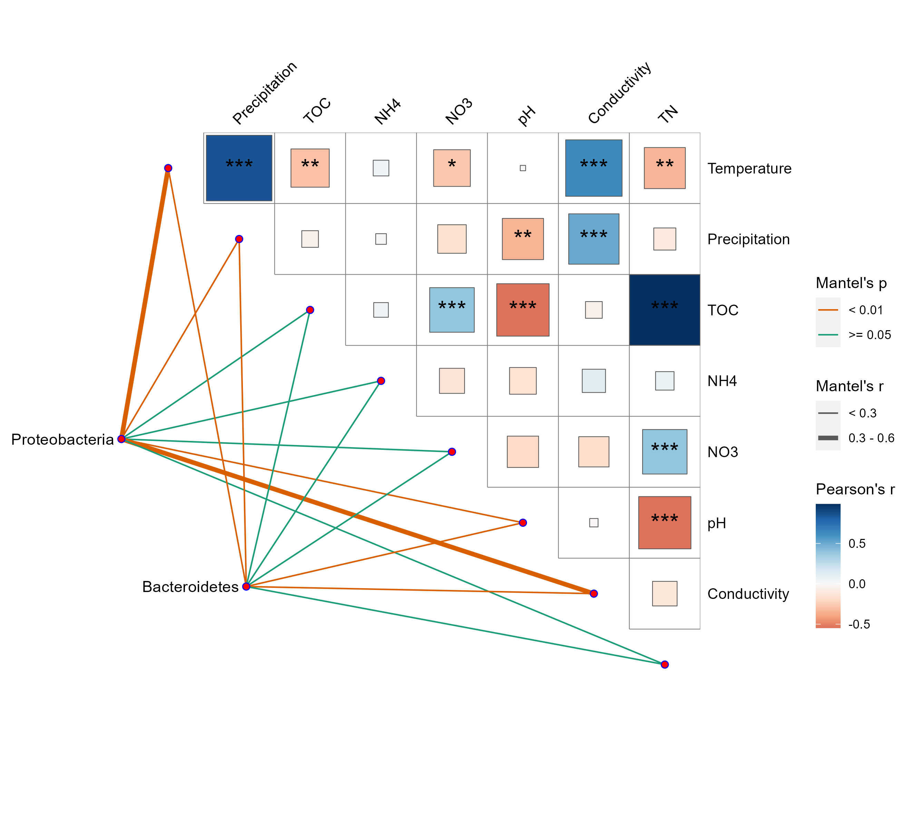

Chapter 14 Other examples
We’ve gathered a few tricks to make several issues easier to solve. We encourage users to contribute some unique, special or helpful examples inspired by the packages.
14.1 Custom taxa order in bar plot
The flexibility of the package design can be reflected on many aspects. In some cases, it is possible to tactfully handle some particular challenges. For example, Dr.Jarrod contribute a cool answer to the question that how to use custom taxa and the order in bar plot by modifying the data inside the object. This is a discussion topic in microeco Discussions (https://github.com/ChiLiubio/microeco/discussions/45).
14.2 tidy_taxonomy function
The taxonomic classification with standard prefix is very important for some analyses,
e.g. taxonomic abundance plotting and biomarker finding.
The tidy_taxonomy function in microeco package is designed to make the taxa having standard prefix.
See those Issues with the detailed examples: (https://github.com/ChiLiubio/microeco/issues/32), (https://github.com/ChiLiubio/microeco/issues/22),
(https://github.com/ChiLiubio/microeco/issues/231), (https://github.com/ChiLiubio/microeco/issues/254) and (https://github.com/ChiLiubio/microeco/issues/338).
14.3 Show the abundance of unknown taxa
In the trans_abund class, the default operation can filter the unclassified taxa, such as those with ’g__’.
Sometimes, these unknown taxa may be useful to represent uncultured species.
Under the circumstance, the abundance of unknown taxa can be used to show the ratio of unknown taxa in the system.
Please see the solution in this topic (https://github.com/ChiLiubio/microeco/issues/165).
14.4 Show the abundance of unknown taxa
In the trans_abund class, the default operation can filter the unclassified taxa, such as those with ’g__’.
Sometimes, these unknown taxa may be useful to represent uncultured species.
Under the circumstance, the abundance of unknown taxa can be used to show the ratio of unknown taxa in the system.
Please see the solution in this topic (https://github.com/ChiLiubio/microeco/issues/165).
14.5 Question of prefix in the taxa
The prefix of taxa in taxonomic table may affect the following performance of plotting, e.g. text in legend. Please see those Issues (https://github.com/ChiLiubio/microeco/issues/32), (https://github.com/ChiLiubio/microeco/issues/7) and (https://github.com/ChiLiubio/microeco/issues/15).
14.6 The use of phylogenetic tree
One of Issues referred to the basic use of phylogenetic tree in the microeco package (https://github.com/ChiLiubio/microeco/issues/33).
14.7 Mantel test + Correlation heatmap
Sometimes, mantel test results and correlations of environmental factors are visualized together to deliver more information.
In this example, we show how to extend the mantel test results from trans_env class with the package ggcor.
Please install ggcor package according to the document (https://chiliubio.github.io/microeco_tutorial/intro.html#github-packages).
# prepare data
library(microeco)
library(magrittr)
data(dataset)
data(env_data_16S)
dataset$sample_table <- data.frame(dataset$sample_table, env_data_16S[rownames(dataset$sample_table), ])
# extract two phyla to show the steps
d1 <- clone(dataset)
d1$tax_table <- d1$tax_table[d1$tax_table$Phylum == "p__Proteobacteria", ]
d1$tidy_dataset()
d1$cal_betadiv()
d2 <- clone(dataset)
d2$tax_table <- d2$tax_table[d2$tax_table$Phylum == "p__Bacteroidetes", ]
d2$tidy_dataset()
d2$cal_betadiv()
# first perform mantel test
t1 <- trans_env$new(dataset = d1, env_cols = 8:15)
t1$cal_mantel(use_measure = "bray", partial_mantel = TRUE)
t2 <- trans_env$new(dataset = d2, env_cols = 8:15)
t2$cal_mantel(use_measure = "bray", partial_mantel = TRUE)
# extract a part of the results
x1 <- data.frame(spec = "Proteobacteria", t1$res_mantel) %>% .[, c(1, 3, 6, 8)]
x2 <- data.frame(spec = "Bacteroidetes", t2$res_mantel) %>% .[, c(1, 3, 6, 8)]
# rename columns
colnames(x1) <- colnames(x2) <- c("spec", "env", "r", "p.value")
# generate interval data
x1 %<>% dplyr::mutate(rd = cut(r, breaks = c(-Inf, 0.3, 0.6, Inf), labels = c("< 0.3", "0.3 - 0.6", ">= 0.6")),
pd = cut(p.value, breaks = c(-Inf, 0.01, 0.05, Inf), labels = c("< 0.01", "0.01 - 0.05", ">= 0.05")))
x2 %<>% dplyr::mutate(rd = cut(r, breaks = c(-Inf, 0.3, 0.6, Inf), labels = c("< 0.3", "0.3 - 0.6", ">= 0.6")),
pd = cut(p.value, breaks = c(-Inf, 0.01, 0.05, Inf), labels = c("< 0.01", "0.01 - 0.05", ">= 0.05")))
# cobine two tables
plot_table <- rbind(x1, x2)
# install ggcor following the steps (https://chiliubio.github.io/microeco_tutorial/intro.html#github-packages)
library(ggplot2)
library(ggcor)
set_scale()
g1 <- quickcor(t1$data_env, type = "upper", cor.test = TRUE, show.diag = FALSE) +
geom_square() +
geom_mark(sig.thres = 0.05, markonly = TRUE, color = "black", size = 6) +
anno_link(aes(colour = pd, size = rd), data = plot_table) +
scale_size_manual(values = c(0.5, 1.5, 3)) +
scale_colour_manual(values = c("#D95F02", "#1B9E77", "#A2A2A288")) +
guides(size = guide_legend(title = "Mantel's r", override.aes = list(colour = "grey35"), order = 2),
colour = guide_legend(title = "Mantel's p", override.aes = list(size = 3), order = 1),
fill = guide_colorbar(title = "Pearson's r", order = 3))
g1
14.8 PCoA + boxplot
In the sections involving trans_venn and trans_env classes,
we mentioned some combination graphs generated based on the aplot package.
Here, we continue to use the aplot and microeco packages to demonstrate how to add boxplots of coordinate scores to PCoA graphs.
Similar combination graphs can be easily manipulated, so we no longer include this type of visualization in the plotting functions of ordination methods.
Firstly, we use trans_beta class to compute PCoA, then perform differential test based on the cal_diff function in trans_env class.
library(microeco)
library(magrittr)
library(ggplot2)
library(aplot)
theme_set(theme_bw())
data(dataset)
# PCoA
t1 <- trans_beta$new(dataset = dataset, group = "Group", measure = "bray")
t1$cal_ordination(method = "PCoA")
# extract the axis scores
tmp <- t1$res_ordination$scores
# differential test with trans_env class
t2 <- trans_env$new(dataset = dataset, add_data = tmp[, 1:2])
# 'KW_dunn' for non-parametric test
t2$cal_diff(group = "Group", method = "anova")Then, employ the plotting functions in t1 and t2 objects for visualization.
p1 <- t1$plot_ordination(plot_color = "Group", plot_shape = "Group", plot_type = c("point", "ellipse"))
# groups order in p2 is same with p1; use legend.position = "none" to remove redundant legend
p2 <- t2$plot_diff(measure = "PCo1", add_sig = T) + theme_bw() + coord_flip() +
theme(legend.position = "none", axis.title.x = element_blank(), axis.text.y = element_blank(), axis.ticks.y = element_blank())
p3 <- t2$plot_diff(measure = "PCo2", add_sig = T) + theme_bw() +
theme(legend.position = "none", axis.title.y = element_blank(), axis.text.x = element_blank(), axis.ticks.x = element_blank())
# height of the upper figure and width of the right-hand figure are both 0.2-fold of the main figure
g <- p1 %>% insert_top(p2, height = 0.2) %>% insert_right(p3, width = 0.2)
g
At this point, we notice that the horizontal axis of the upper figure and the vertical axis of the right-hand figure do not correspond precisely with those of the main figure. Therefore, if we proceed with these graphs, the axis ticks of the upper and right-hand figures should be kept. If the user requires complete correspondence of the ticks, further control over the coordinate axes should be implemented. Here, we manually control the coordinate range.
# use 1.4-fold of the scores as axis ranges
x_lim <- range(tmp[, 1]) * 1.4
y_lim <- range(tmp[, 2]) * 1.4
# limit x and y axis without any extension
p1 <- p1 + scale_y_continuous(limits = y_lim, expand = c(0, 0)) +
scale_x_continuous(limits = x_lim, expand = c(0, 0))
# limit x axis of upper figure (it's y axis when flipped)
p2 <- p2 + scale_y_continuous(limits = x_lim, expand = c(0, 0))
# limit y axis of right-hand figure
p3 <- p3 + scale_y_continuous(limits = y_lim, expand = c(0, 0))
g <- p1 %>% insert_top(p2, height = 0.2) %>% insert_right(p3, width = 0.2)
gNow, the ticks of the coordinate axes fully correspond, and we may selectively remove the ticks on the upper and right-hand figures.
p2 <- p2 + theme(axis.text.x = element_blank(), axis.ticks.x = element_blank())
p3 <- p3 + theme(axis.text.y = element_blank(), axis.ticks.y = element_blank())
g <- p1 %>% insert_top(p2, height = 0.2) %>% insert_right(p3, width = 0.2)
g
# save g to computer
ggsave("test1.pdf", g, width = 7, height= 6)
14.9 FAPROTAX + differential test
In the trans_func section, we showed an example of correlations between the abundances of OTUs with the traits from FAPROTAX database and environmental factors.
Now, we go ahead and use trans_diff class to demonstrate the differential test of the abundances of OTUs with the traits across groups.
library(microeco)
data(dataset)
t1 <- trans_func$new(dataset)
t1$cal_spe_func(prok_database = "FAPROTAX")
t1$cal_spe_func_perc(abundance_weighted = TRUE)
# it is better to clone a dataset
tmp_mt <- clone(dataset)
# transpose res_spe_func_perc to be a data.frame like taxonomic abundance
tmp <- as.data.frame(t(t1$res_spe_func_perc), check.names = FALSE)
# assign the table back to taxa_abund list for further analysis
tmp_mt$taxa_abund$func <- tmp
# select the "func" in taxa_abund list in trans_diff
t2 <- trans_diff$new(dataset = tmp_mt, method = "anova", group = "Group", taxa_level = "func")
t2$plot_diff_abund(add_sig = T) + ggplot2::ylab("Relative abundance (%)")14.10 RDA results output
In some analyses, it is often necessary to preserve intermediate files of various analysis results,
and not all files are in the data.frame format.
For example, in RDA analysis, the res_ordination_R2 generated by cal_ordination function is a numeric vector,
and the res_ordination_envfit generated by the cal_ordination_envfit function is of envfit class.
For those outputs, we can utilize the capture.output function to redirect the contents displayed in the dialogue box into a file.
library(microeco)
data(dataset)
data(env_data_16S)
t1 <- trans_env$new(dataset = dataset, add_data = env_data_16S[, 4:11])
t1$cal_ordination(method = "RDA", taxa_level = "Genus")
# get the significance of the terms
t1$cal_ordination_anova()
# fit factors onto the ordination to get R2 for each factor
t1$cal_ordination_envfit()
t1$trans_ordination(adjust_arrow_length = TRUE)
g1 <- t1$plot_ordination(plot_color = "Group", plot_shape = "Group")
ggplot2::ggsave("RDA.pdf", g1, width = 8, height = 6.5)
# use capture.output to save output
capture.output(t1$res_ordination_R2, file = "RDA_R2.txt")
capture.output(t1$res_ordination_envfit, file = "RDA_envfit.txt")
# save data.frame objects
write.table(t1$res_ordination_terms, "RDA_anova_termsig.txt", sep = "\t")
write.table(t1$res_ordination_axis, "RDA_anova_axissig.txt", sep = "\t")
write.table(t1$res_ordination_trans$df_sites, "RDA_axis_sample.txt", sep = "\t")
write.table(t1$res_ordination_trans$df_arrows, "RDA_axis_term.txt", sep = "\t")
write.table(t1$res_ordination_trans$df_arrows_spe, "RDA_axis_taxa.txt", sep = "\t")14.11 betaNRI/betaNTI for each group
Sometimes, if you want to perform betaNRI/betaNTI for each group individually (one group is considered one species pool), you should calculate the index for each group, respectively.
library(ggplot2)
library(microeco)
data(dataset)
# we create a list to store the trans_nullmodel results.
sesbeta_each <- list()
group_col <- "Group"
all_groups <- unique(dataset$sample_table[, group_col])
# calculate for each group, respectively
for(i in all_groups){
# like the above operation, but need provide 'group' and 'select_group'
test <- trans_nullmodel$new(dataset, group = group_col, select_group = i, filter_thres = 0.0005)
test$cal_ses_betampd(runs = 500, abundance.weighted = TRUE)
sesbeta_each[[i]] <- test$res_ses_betampd
}
# merge and reshape to generate one symmetrical matrix
test <- lapply(sesbeta_each, reshape2::melt) %>%
do.call(rbind, .) %>%
reshape2::dcast(., Var1~Var2, value.var = "value")
rownames(test) <- test[, 1]
test <- test[, -1, drop = FALSE]
# like the above operation
dataset$beta_diversity[["betaNRI"]] <- test
t2 <- trans_beta$new(dataset = dataset, group = "Group", measure = "betaNRI")
t2$cal_group_distance()
# statistical analysis
t2$cal_group_distance_diff(method = "wilcox")
g1 <- t2$plot_group_distance(boxplot_add = "mean")
g1 + geom_hline(yintercept = -2, linetype = 2) + geom_hline(yintercept = 2, linetype = 2)
14.12 Visualize taxonomic abundance with trans_alpha class
When it is necessary to perform differential analysis and visualization between groups within different categories, the trans_diff class currently struggles to achieve this for multiple taxa. At this time, we can use the trans_alpha class to analyze each taxon and merge the figures into one.
library(microeco)
library(magrittr)
library(mecoturn)
data("wheat_16S")
# first clone the data
d1 <- clone(wheat_16S)
# tidy the abundance table and view it as alpha diversity
d1$alpha_diversity <- d1$taxa_abund$Genus %>% .[!grepl("__$", rownames(.), ignore.case = TRUE), ] %>% t %>% as.data.frame
# extract a part of taxa as an example
d1$alpha_diversity %<>% .[, 1:10]
# simplify the taxa names
colnames(d1$alpha_diversity) %<>% gsub(".*g__", "", .)
t1 <- trans_alpha$new(d1, group = "Type", by_group = "Region")
t1$cal_diff(method = "anova")
t1$plot_alpha(measure = "Pseudomonas")14.13 Customized network input and analysis
When users need to use the trans_network class to calculate some properties of their customized network,
they can refer to the following method.
Only the network in igraph format is required, and no other data is necessary.
It should be noted that the nodes of the provided network must have the name attribute.
library(igraph)
# first generate an igraph-format network as the input of the example
g1 <- make_graph(rep(LETTERS, each = 2)[-c(1, 52)], directed = FALSE)
g1
library(microeco)
t1 <- trans_network$new(dataset = NULL)
t1$cal_network(network_method = NULL)
t1$res_network <- g1
t1$cal_module()
t1$cal_network_attr()
t1$get_node_table()